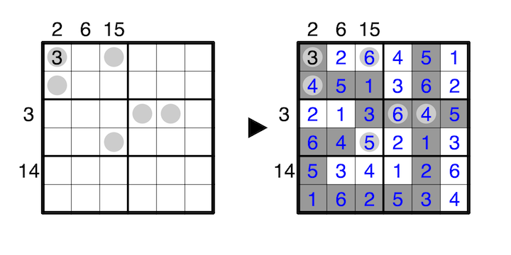

Shade some cells such that all shaded cells are orthogonally connected, and no 2x2 area may be entirely shaded. We call an orthogonally connected group of unshaded cells an island. Numbers must not repeat on an island, and all islands must contain the number that is its size. A clue outside the grid indicates the sum of numbers on islands in its row or column.
A number in a grey circle indicates how many of the 8 surrounding edges and vertices to that cell are part of the boundary of an island.
A 1-6 example is provided:
